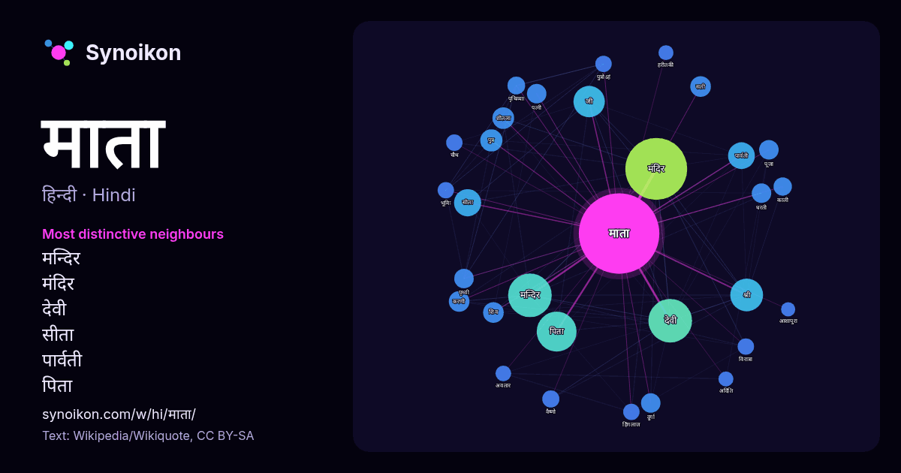

हिन्दी · आज के शब्दों की सूची
माता
“mother” · विकिपीडिया, Wikiquote के 1000 प्रयोगों में इसके आसपास मिले शब्द।

सबसे विशिष्ट पड़ोसी
- मन्दिर 53×
- मंदिर 43×
- देवी 42×
- सीता 28×
- पार्वती 27×
- पिता 25×
- शीतला 21×
- श्री 20×
- करणी 19×
- सती 18×
- दुर्गा 15×
- पृथिव्याः 15×
- धरती 14×
- वैष्णो 14×
- जी 14×
- विरात्रा 13×
- भूमिः 13×
- पुत्रोऽहं 13×
- हिंगलाज 13×
- चौथ 13×
× = सामान्य विकिपीडिया टेक्स्ट की तुलना में कितने गुना अधिक।
सबसे अधिक आने वाले पड़ोसी
- मंदिर 171
- देवी 85
- मन्दिर 85
- नाम 84
- पिता 71
- श्री 48
- जी 44
- भारत 43
- सीता 33
- पार्वती 32
- स्थित 26
- थीं 24
- पुत्र 22
- प्रसिद्ध 22
- शीतला 21
- करणी 19
- भगवान 19
- शिव 19
- सती 19
- दुर्गा 17
संदर्भ में
- माता वह है जिसके द्वारा कोई प्राणी जन्म लेता है। माता का संस्कृत मूल मातृ है। हिन्दी में इस शब्द का प्रयोग प्रायः इष्टदेवी को संबोधित करने के लिए किए Wikipedia snippets · माता
- शहर है, माता जी का भव्य मंदिर इसी छोटे से शहर के शक्तिगिरी पर्वत पर बना हुआ है। चौथ माता हिन्दू धर्म की प्रमुख देवी मानी जाती है जो स्वयं माता पार्वती Wikipedia snippets · चौथ माता
- आराध्य देवी, करणी माता को सामान्यतः डाढ़ाली डोकरी और करणीजी महाराज के नाम से भी जाना जाता है। करणी माता (मां करणी या करणीजी;) (करणी माता को महाई भी कहा जाता Wikipedia snippets · करणी माता मन्दिर, राजस्थान
- जीण माता,सैनी यादव (अहिर), अग्रवाल,स्वर्णकार,मीना, शेखावाती राजपूत (शेखावत और राव राजपूत) और राजसी के योद्धा वर्ग के जंगली, की कुलदेवी हैं। जीण माता के Wikipedia snippets · जीण माता
- Riddhi Kothari From Belapur colour = हरा सच्चियाय माता (सचिया माता) के नाम से भी जानी जाती है इनका मंदिर जोधपुर से 63 किमी दूर ओसियां में स्थित है। यह Wikipedia snippets · सच्चियाय माता मन्दिर
- छिब्बर के अनुसार माता सुन्दरी गुरु महाराज की द्वितीय पत्नी थीं और माता जीतो का नाम बदला नहीं गया था। इसके समर्थन में उनका कहना है कि माता जीतो के अन्तिम Wikipedia snippets · माता जीतो
- माता अमृतानंदमयी देवी (देवनागरी: माता अमृतानंदमयी, मलयालम: മാതാ അമൃതാനന്ദമയി, जन्म सुधामणि इदमन्नेल, 27 सितम्बर 1953) एक हिन्दू आध्यात्मिक नेत्री व गुरु Wikipedia snippets · माता अमृतानंदमयी
- चारण की पुत्री देवी आवड़ को तनोट माता के रूप में पूजा जाता है। पुराने चारण साहित्य के अनुसार तनोट माता, हिंगलाज माता की अवतार हैं जिनका प्रसिद्ध मन्दिर Wikipedia snippets · तनोट माता
और शब्द
- इतिहास
- ईश्वर
- कार्य
- कुत्ता
- गर्मी
- गाना
- घंटी
- घड़ी
- घोड़ा
- चाय
- चित्रकला
- छाया
- जंगल
- जलवायु
- जीवन
- तूफ़ान
- दर्पण
- द्वीप
- नक्षत्र
- नमक
- परिवार
- पहाड़
- पानी
- पैसा
- प्रकृति
- बगीचा
- बिल्ली
- भाषा
- भोजन
- मानचित्र
- मृत्यु
- मौन
- रेगिस्तान
- रेलगाड़ी
- रोटी
- वर्षा
- विज्ञान
- शक्ति
- शरद
- शहद
- शहर
- सड़क
- सत्य
- समय
- सर्दी
- सेतु
- स्वर्ण
- स्वास्थ्य
- हृदय
2026-10-09 को डिफ़ॉल्ट सेटिंग्स (±5 शब्द, मध्यम कॉर्पस) के साथ पहले से गणना की गई। इंटरैक्टिव मानचित्र इसे लाइव डेटा से ताज़ा कर सकता है।
मशीन-अनूदित इंटरफ़ेस; सुधारों का स्वागत है।